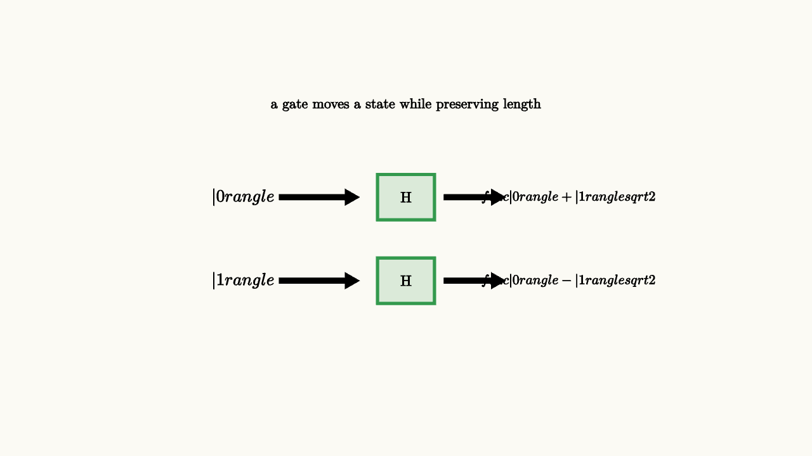

Once amplitudes are vectors, gates have a clear job. They move the vector while preserving total probability. The mathematical word is unitary. A unitary matrix keeps inner products intact, so normalized states stay normalized and distinguishable states stay distinguishable.
For one qubit, a gate acts on the coordinate vector
The Pauli $X$ gate swaps the two amplitudes:
The phase gate leaves the size of each coordinate alone while changing a direction in the complex plane:
The Hadamard gate is the first gate that feels like computation rather than bookkeeping. It changes the basis in which information is visible:

source
background = [0.985, 0.98, 0.955, 1]
camera = Camera(5.0b)
mesh gate = block {
. center{[0, 1.52, 0]} Text("a gate moves a state while preserving length", 0.62)
. center{[-2.0, 0.38, 0]} Tex("|0\\rangle", 0.76)
. stroke{BLACK, 2.5} Arrow(start: [-1.55, 0.38, 0], end: [-0.6, 0.38, 0])
. fill{alpha{0.16} GREEN} stroke{GREEN, 3} center{[0, 0.38, 0]} Rect([0.7, 0.56])
. center{[0, 0.38, 0]} Text("H", 0.66)
. stroke{BLACK, 2.5} Arrow(start: [0.48, 0.38, 0], end: [1.2, 0.38, 0])
. center{[2.0, 0.38, 0]} Tex("\\frac{|0\\rangle+|1\\rangle}{\\sqrt2}", 0.60)
. center{[-2.0, -0.65, 0]} Tex("|1\\rangle", 0.76)
. stroke{BLACK, 2.5} Arrow(start: [-1.55, -0.65, 0], end: [-0.6, -0.65, 0])
. fill{alpha{0.16} GREEN} stroke{GREEN, 3} center{[0, -0.65, 0]} Rect([0.7, 0.56])
. center{[0, -0.65, 0]} Text("H", 0.66)
. stroke{BLACK, 2.5} Arrow(start: [0.48, -0.65, 0], end: [1.2, -0.65, 0])
. center{[2.0, -0.65, 0]} Tex("\\frac{|0\\rangle-|1\\rangle}{\\sqrt2}", 0.60)
}
"hadamard table"
play Fade(0.7)This table also hints at reversibility. Apply $H$ twice and the original basis state returns. The second application makes the amplitudes interfere. Starting from $|0\rangle$, the two contributions to $|0\rangle$ reinforce and the two contributions to $|1\rangle$ cancel. A quantum gate can spread amplitude and then collect it again because it has kept the phase relationships.
Circuit diagrams compress this story into boxes and wires. That compression is useful, although it can hide the geometry. A wire carries a state. A box applies a linear map. A whole circuit is a product of matrices, read in time order. For a one-qubit circuit,
The order matters because matrix multiplication usually does. A phase placed before a Hadamard can become a probability difference. The same phase placed after the last Hadamard may remain invisible to the measurement being used.
source
background = [0.985, 0.98, 0.955, 1]
"Bloch View"
camera = Camera([3.0, -3.2, 2.0], [0, 0, 0], [0, 0, 1])
mesh bloch = [
fill{alpha{0.08} BLUE} stroke{BLUE, 1.5} Sphere(0.95, 2),
stroke{GRAY, 2} Arrow(0.95d, 0.95u),
stroke{GRAY, 2} Arrow(0.95l, 0.95r),
stroke{ORANGE, 4} Arrow(0r, 0.85u),
center{1.35u} Text("single-qubit gates are rotations of a state direction", 0.62)
]
play Fade(0.8)
"X Gate"
bloch = [
fill{alpha{0.08} BLUE} stroke{BLUE, 1.5} Sphere(0.95, 2),
stroke{GRAY, 2} Arrow(0.95d, 0.95u),
stroke{GRAY, 2} Arrow(0.95l, 0.95r),
stroke{ORANGE, 4} Arrow(0r, 0.82d),
center{1.35u} Text("X swaps north and south", 0.62)
]
play Trans(1.0)
"Phase Then Read"
bloch = [
fill{alpha{0.08} BLUE} stroke{BLUE, 1.5} Sphere(0.95, 2),
stroke{GRAY, 2} Arrow(0.95d, 0.95u),
stroke{GRAY, 2} Arrow(0.95l, 0.95r),
stroke{ORANGE, 4} Arrow(0r, 0.82r),
center{1.35u} Text("phase rotations become useful after a basis change", 0.62)
]
play Trans(1.0)
"Camera"
camera = Camera([2.0, -1.7, 1.25], [0, 0, 0], [0, 0, 1])
play CameraLerp(&camera, 1.2)For many qubits, gates still follow the same principle. A two-qubit gate is a unitary matrix on a four-dimensional state space. A controlled gate applies one operation to the target when the control branch has amplitude on $|1\rangle$, and a different operation when the control branch has amplitude on $|0\rangle$. If the control is in superposition, this can entangle the two qubits.
The practical lesson is that a quantum program is a planned sequence of basis changes and phase changes. Some gates put information into phase, some move phase into amplitude, and measurement reads only the final amplitude sizes in the chosen basis. The circuit model looks discrete, with a short menu of gates, while the underlying story is geometric: keep length, move direction, protect phase, and arrange interference.
There is one more reason unitaries matter. A unitary gate has an inverse. If the circuit applies $U$, then another circuit can apply $U^\dagger$ and return the state to its earlier value. This reversibility sounds restrictive because ordinary computer programs throw information away all the time. For example, the classical operation "erase this bit" maps both $0$ and $1$ to $0$, so the input cannot be recovered.
Quantum circuits handle this by embedding irreversible-looking computations into reversible ones. Instead of erasing the input, a circuit writes a result into another register:
The input $x$ is still present, so the map can be reversible. Later, algorithms often "uncompute" temporary work registers by running part of the circuit backward. This clears scratch space while keeping the phase relationships that the algorithm needs.
So a gate is more than a box in a diagram. It is a reversible motion of amplitude. Good circuit design asks which basis should make a property simple, where a phase should be inserted, and how temporary information should be removed before measurement.